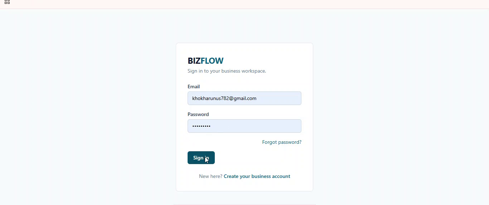
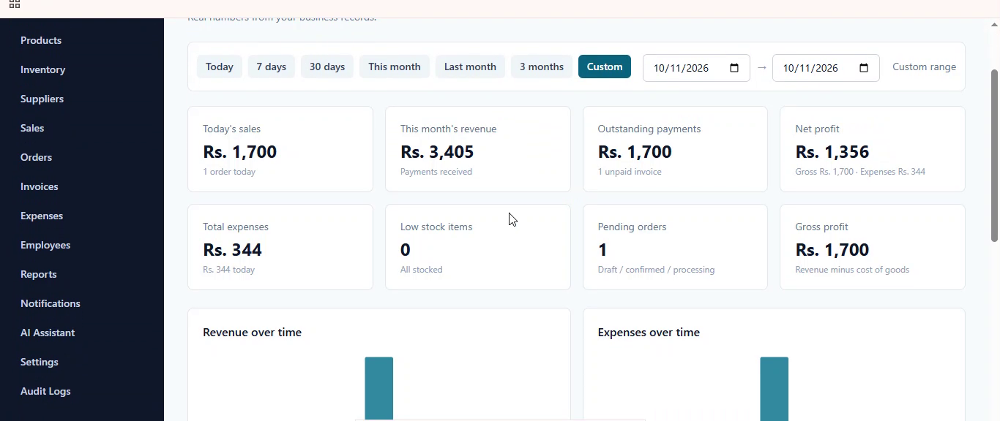
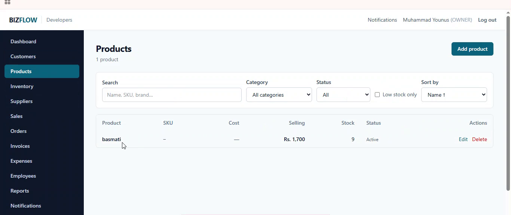
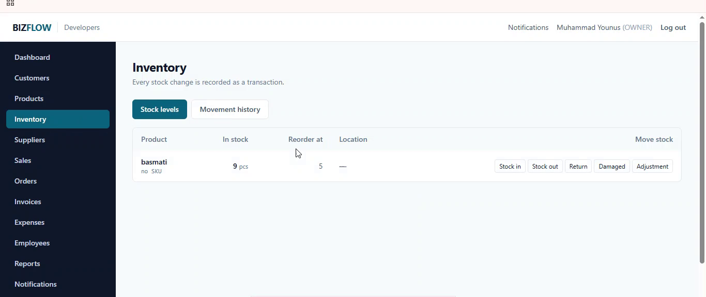
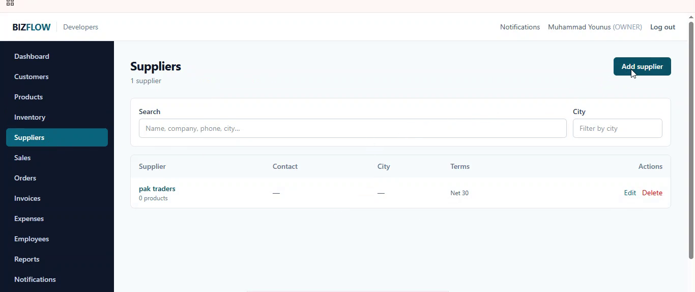
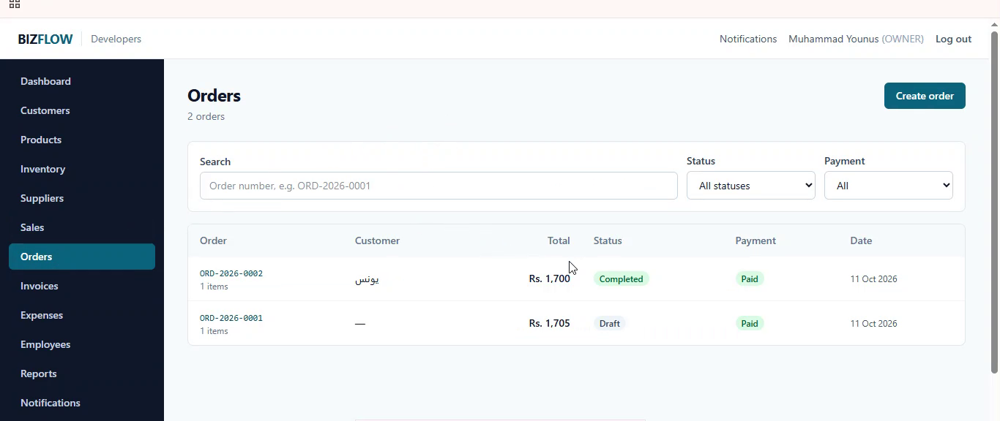
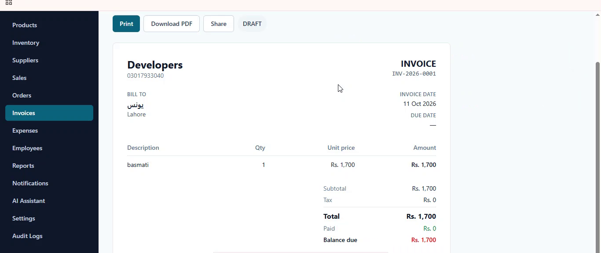
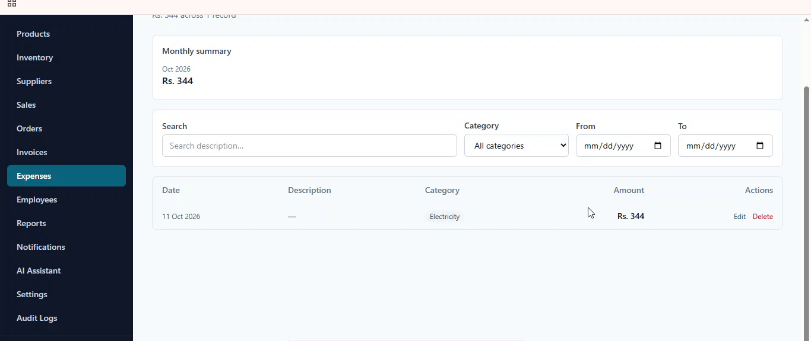
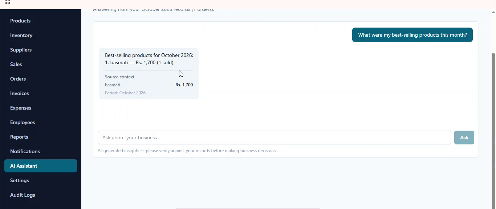
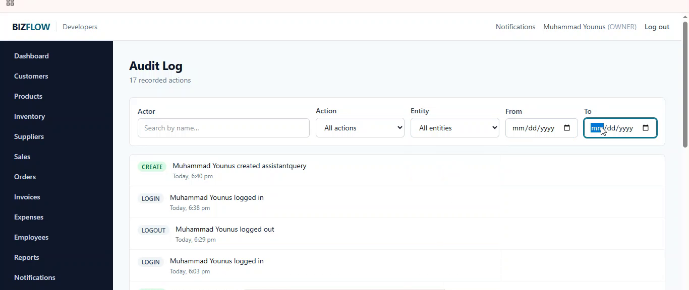

BizFlow: a multi-tenant business management platform
A full-stack application for small and medium businesses in Pakistan, covering customers, inventory, orders, invoices, expenses and employees, with every record scoped to an organization.
Overview
BizFlow manages the day-to-day records of a small business: customers, products and stock, suppliers, orders, invoices, payments, expenses, employees, notifications and an audit trail. Each business is an organization, and every piece of data belongs to exactly one of them. Users sign in, work inside their organization, and see only what their role allows.
Problem and goals
Small businesses need quick answers to a few questions: what is in stock, who owes money, what was spent, and what was earned. BizFlow puts those answers in one application instead of scattered notes and spreadsheets.
- Keep each organization’s data completely separate from every other organization’s.
- Give owners, managers, staff and read-only users different, granular permissions.
- Make every stock change traceable, and make order confirmation all-or-nothing.
- Produce real PDF invoices and a profit and loss report from actual records.
- Support local conventions: PKR amounts, the Asia/Karachi time zone, and +92 phone formats.
- Offer an AI assistant that can never see another organization’s data.
My role
I defined the product scope, reviewed and tested each module, debugged problems and maintain the codebase. The repository README states openly that AI-assisted coding produced much of the initial code. My work was to review, test, debug and harden it, including verifying features by hand against a live PostgreSQL database.
Technology stack
Frontend
- React
- TypeScript
- Vite
- Tailwind CSS
- TanStack Query
- React Router
- Socket.IO client
Backend
- Node.js
- Express
- TypeScript
- Prisma
- Socket.IO
- Zod
- PDFKit
- bcrypt
- JSON Web Tokens
Database, testing and delivery
- PostgreSQL
- Vitest
- Supertest
- Playwright
- Docker Compose
- nginx
- GitHub Actions
Architecture
The browser loads a React single-page app. In the Docker setup, nginx serves the app and forwards /api and Socket.IO traffic to the Express API, which talks to PostgreSQL through Prisma.
- Frontend: React with TanStack Query for server state and React Router for navigation. All calls go through
/api. - Backend: Express and TypeScript. Authentication is stateless JWT, and every request resolves its
organizationIdfrom the signed-in member. - Real time: Socket.IO rooms, one per organization, authenticated with the same JWT.
- Database: PostgreSQL through Prisma with SQL migrations and 28 models.
Main features
- Dashboard with sales, revenue, outstanding amounts, expenses and profit, filtered by date range.
- Customers, products and suppliers with search, filters, soft delete and outstanding balances.
- Inventory where stock changes (in, out, adjustment, return, damaged) are recorded as movements, with low-stock alerts.
- Orders moving from draft to confirmed to completed.
- Invoices numbered per organization, exported as PDF, with status derived from payments.
- Expenses and reports including a profit and loss report built from database records.
- Employees with salary fields protected by a separate permission.
- Notifications and audit log: real-time events and a readable history of who did what.
- AI business assistant grounded in the organization’s own aggregates.
Important implementation decisions
- The organization comes from the session, never from the client. Every query is scoped by
organizationId, and Zod strips unknown fields so a request cannot set it. - Cross-tenant reads return 404, not 403, so the API does not reveal that a record exists in another organization.
- One path for stock changes. Inventory only changes through a single
recordMovement()function, which writes the audit trail. - Per-organization numbering for orders and invoices, and soft deletes through a
deletedAtfield. - Permissions on the server. Role checks live in backend middleware, not only in the UI.
- The AI never touches the database. It receives pre-computed aggregates from a controlled data layer. Without a configured provider, a built-in rule engine answers from the same aggregates.
Technical challenges and how I addressed them
Making order confirmation safe
Confirming an order must deduct stock and create an invoice together, or not at all. The route wraps both steps in a Prisma database transaction, so a failure rolls everything back instead of leaving stock and invoices out of sync.
Ending sessions with stateless tokens
JWTs cannot normally be revoked. Each token carries a version number that must match the member’s current tokenVersion, which is bumped on logout and password change, so old sessions stop working immediately.
Keeping an AI assistant honest
Language models can invent numbers. The assistant is given only verified aggregates, includes source context in its answers, says there is not enough data when that is the case, and carries a verification disclaimer.
Security and validation
- Passwords are hashed with bcrypt (cost 12). Reset tokens are stored hashed, are single-use and expire after an hour, and the forgot-password endpoint does not reveal whether an email exists.
- Login and authentication endpoints are rate limited.
- Request bodies are validated with Zod across the API.
- The app refuses to start in production without a JWT secret, and configuration comes from environment variables with an
.env.example; no secrets are committed. - The README documents a security review that found and fixed several real vulnerabilities.
Testing approach
The backend has Vitest and Supertest suites for authentication, validation, tenant isolation, security attacks and notifications. Four Playwright browser tests cover login, access control and tenant isolation. A GitHub Actions workflow runs linting, type checks, Prisma validation and migrations, the backend tests and build, the Playwright job, the frontend lint, type check and build, and Docker image builds.
Screenshots
Captured from the running application with fictional demo data (a made-up store in Lahore).










Lessons learned and next steps
The biggest lesson was that generated code is only a starting point. Tenant isolation, transactions and permission checks only became trustworthy once I wrote tests that tried to break them.
Known limitations and planned improvements
- Connect a real email provider for password resets.
- Add a Redis adapter for Socket.IO and move file uploads to object storage before running more than one API instance.
- Add an Urdu interface; the language setting already exists but the UI is English only.
- Deploy a public demo so recruiters can try the app.